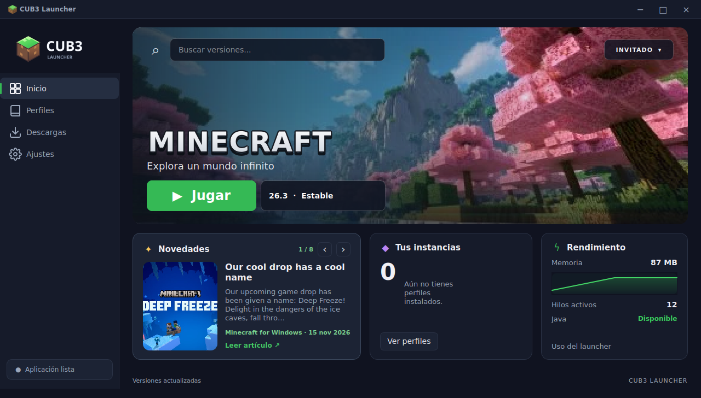

Versiones oficiales
Busca versiones y deja que CUB3 descargue los componentes del juego necesarios para prepararlas.
↗01 TU JUEGO, TU ESPACIO
Un launcher de Minecraft para ordenar lo importante: versiones, perfiles, descargas y esos mods que cambian cada partida.
 BIOMA / 01
BIOMA / 01TODO EN SU SITIO
CUB3 reúne la preparación de Minecraft en una sola app. Elige una versión, configura tu entorno y sigue lo que está pasando mientras el juego se alista.

Busca versiones y deja que CUB3 descargue los componentes del juego necesarios para prepararlas.
↗Java, memoria, resolución y carpeta del juego: ajusta el entorno desde un solo lugar.
↗Consulta publicaciones e imágenes recientes del feed oficial de noticias de Minecraft.
↗Sigue el avance de las descargas en la app y administra tus instancias locales.
↗ENCUENTRA TU PRÓXIMA IDEA
Explora proyectos de Modrinth desde CUB3. Filtra por versión de Minecraft y cargador, revisa la ficha y descarga el archivo compatible con confirmación.
La ilustración representa el flujo de búsqueda, no resultados reales.
CUB3 no instala Fabric, Forge ni NeoForge. CurseForge abre una búsqueda externa en el navegador.
MÁS CLARO, MÁS CONTROL
Un build experimental requiere información honesta y controles visibles. Estas son algunas decisiones detrás del launcher.
Los tokens se guardan en el llavero del sistema; CUB3 no guarda contraseñas de Ely.by. Microsoft continúa su autorización en el navegador.
La app limita y valida las transferencias; cuando Modrinth entrega tamaño y hash, CUB3 los comprueba antes de instalar el archivo.
Antes de descargar un mod, CUB3 indica el archivo y el destino, y pide confirmación si ya existe uno con el mismo nombre.
Los paquetes de desarrollo pueden incluir funciones experimentales. Revisa los cambios y conserva copias de seguridad de tus mundos.
EN CONSTRUCCIÓN, SIN HUMO
El proyecto mantiene CI para Linux y está desarrollando el paquete portable de Windows. La web muestra el estado real de las plataformas; un artefacto experimental no es una versión estable.
ELIGE TU PLATAFORMA
Builds experimentales desde la rama de desarrollo. Comprueba los requisitos antes de instalar.
APT resolverá las dependencias declaradas del paquete. Java se recomienda y la versión necesaria depende de Minecraft.
sudo apt install ./cub3-launcher-dev-amd64.debEl .deb se construye en Debian 12. Windows se distribuirá como ZIP con el .exe, DLL, plugins Qt y assets cuando su CI produzca y publique el artefacto. Los paquetes de desarrollo pueden cambiar y no sustituyen un release estable.
DEL PRIMER CLIC AL JUEGO
Desde Inicio elige Microsoft (abre el navegador) o Ely.by.
Busca y selecciona una versión para preparar sus archivos.
Selecciona Java, memoria, resolución y carpeta del juego.
Revisa perfiles, noticias, descargas y mods compatibles.
Conserva respaldos de tus mundos, especialmente en builds de desarrollo.
TU PRÓXIMA PARTIDA TE ESPERA